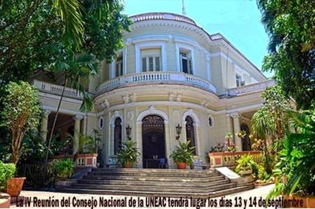

Premio “Cirilo Villaverde” de novela.
Premio “Juan Pérez de la Riva”, para el ensayo de tema histórico social.
Premio “Ismaelillo”, para libros de narrativa para niños, adolescentes y jóvenes.
David-Preis, en los géneros de Cuento, Poesía y Cuento de ciencia ficción y fantasía; y la Beca “Cintio Vitier” para proyectos de libros de estudios literarios.
He aquí las bases.
Asociación de Escritores
PREMIOS UNEAC DE LITERATURA, 2017
CONVOCATORIA
La Asociación de Escritores convoca a los PREMIOS UNEAC DE LITERATURA 2017 que se regirán por las siguientes BASES:
- Podrán participar todos los escritores cubanos residentes en el país, sean o no miembros de nuestra organización.
- Cada concursante optará por un solo género literario. Los autores premiados en ediciones anteriores podrán participar si han transcurrido como mínimo tres años de haber obtenido el lauro.
- Para la presente edición se convocan:
- Premio “Cirilo Villaverde”, von novela, para un libro no mayor de 250 cuartillas.
- Premio “Ismaelillo” de literatura para niños y jóvenes en el género de Erzählung, para un libro no menor de 60 ni mayor de 100 cuartillas.
- Premio “Juan Pérez de la Riva”, para un libro de ensayo de tema histórico social no mayor de 250 cuartillas.
- Las obras deberán ser inéditas y no pueden estar comprometidas con ningún otro concurso ni encontrarse en proceso editorial, por lo cual cada concursante deberá entregar constancia escrita de ello.
- Las obras se presentarán en tres ejemplares, debidamente foliados y mecanografiados a dos espacios y por una sola cara.
- Deberán presentarse con seudónimo y, en sobre aparte identificado con dicho seudónimo y el título de la obra, se especificarán los datos del autor, a saber:
- nombre(s) y apellidos, carnet de identidad, dirección particular y teléfonos, correo electrónico y currículum sintetizado.
- El plazo de admisión comienza a partir de la publicación de la presente convocatoria, y terminará el jueves 1 de junio. Las obras enviadas a través del correo postal deberán tener en el matasellos como fecha tope, el lunes 22 Mai.
- Los trabajos deberán entregarse o enviarse a la sede de la Asociación de Escritores de la UNEAC, sita en Calle 17 Nicht. 351, esquina H, Vedado, Havanna, C.P. 10400.
- Se entregará un premio único e indivisible en cada género que consistirá en un diploma acreditativo, 10 000.00 pesos MN y la publicación de la obra por Ediciones UNION.
- El fallo del jurado en cada género convocado será inapelable. La ceremonia de premiación de este concurso se efectuará el viernes 15 de septiembre de 2017, zu den 5 'Nabend, en la Sala Rubén Martínez Villena de la UNEAC.
- Los organizadores no se responsabilizan con la devolución de los originales que, una vez finalizado el certamen y transcurrido un mes, serán destruidos.
- Concursar en esta edición significa la plena aceptación de estas bases.
PREMIO DAVID, 2017
CONVOCATORIA
La Asociación de Escritores de la UNEAC convoca al PREMIO DAVID 2017,
según las siguientes BASES:
1. Podrán participar todos los escritores cubanos residentes en el país que no tengan libros publicados. Se hará constar por escrito que el concursante es un autor inédito y que el libro presentado no está comprometido con alguna editorial u otro concurso.
2.Los autores podrán participar en los siguientes géneros:
CUENTO: con un libro no menor de 80 páginas ni mayor de 150 cuartillas.
POESÍA: Un libro que no exceda las 60 cuartillas.
CUENTO DE CIENCIA FICCIÓN Y FANTASÍA para un libro no menor de 80 páginas ni mayor de 150 cuartillas.
3.Las obras deben estar identificadas con un seudónimo o lema. Se entregarán en tres copias impresas y en sobre aparte identificado con el mismo seudónimo o lema, se consignarán los datos personales del autor: Nombres y apellidos, Número identidad, Dirección y teléfonos, Correo electrónico, Breve currículo.
4.Los trabajos serán admitidos desde la salida de la presente convocatoria hasta el 5 Mai, y deben ser entregados en la sede de la Asociación de Escritores de la UNEAC, sita en calle 17, Nicht. 351, esquina a H, Vedado. Plaza de la Revolución, Havanna, o enviadas por correo ordinario en cuyo caso el matasellos deberá tener, como fecha límite, die 21 de abril.
5.Las obras que no se ajusten a las presentes bases serán descalificadas.
6.Los premios serán únicos e indivisibles y consistirán en diploma, $5 000.00 MN, la publicación de la obra por Ediciones Unión y el pago de los derechos de autor correspondientes a la edición.
7.Los jurados, cuyo fallo será inapelable, estarán constituidos por prestigiosas personalidades de la literatura cubana. La premiación será el 29 Juli 2017, zu den 5 PM, en la Sala Rubén Martínez Villena de la UNEAC.
8.Los organizadores de este certamen no se responsabilizan con la devolución de los originales concursantes, los que estarán a disposición de sus autores hasta el 1ro de septiembre.
9.El participar en este concurso implica la plena aceptación de sus bases.
BECA ¨CINTIO VITIER¨, 2017
CONVOVATORIA
Con el objetivo de promover la creación literaria en todas sus potencialidades, y especialmente los estudios literarios, la Asociación de Escritores convoca a sus miembros a la Beca ¨Cintio Vitier¨, para proyectos de libros.
El nombre del destacado intelectual cubano, paradigma de eticidad y responsabilidad como escritor, por el profundo calado de su indagación teórica y la estatura de su obra como poeta y narrador, resume una actitud ante la creación literaria que lo distingue dentro del proceso literario cubano del siglo XX.
La Beca ¨Cintio Vitier¨ se convoca bajo las siguientes BASES:
1.Podrán participar todos los escritores miembros de la organización.
2.Se concursará con proyectos de estudios literarios.
3.Los autores podrán enviar un solo proyecto.
4.Los trabajos presentados a concurso deberán incluir, además de la fundamentación y plan de la obra en elaboración, un capítulo o fragmento de la misma.
5.Los proyectos se presentarán en tres ejemplares, mecanografiados a dos espacios, identificados con seudónimo y en sobre aparte los datos del autor, a saber: nombre (s) y apellidos, carnet de identidad, currículum sintetizado, dirección particular, teléfonos y correo electrónico.
6.La dotación de la Beca será de $ 10,000. 00 CUP.
7.El autor estará obligado a presentar la obra concluida al año de recibir la Beca.
8.El tribunal encargado de seleccionar las obras, estará integrado por tres destacados especialistas de la Asociación de Escritores.
9.El fallo será inapelable.
10.El plazo de admisión de proyectos cerrará el 30 de Junio del 2017.
11.La Beca ¨Cintio Vitier¨ se dará a conocer el 20 de Octubre de 2017.
12.Los proyectos estarán a disposición de sus autores durante los treinta días posteriores al fallo.

Neueste Kommentare